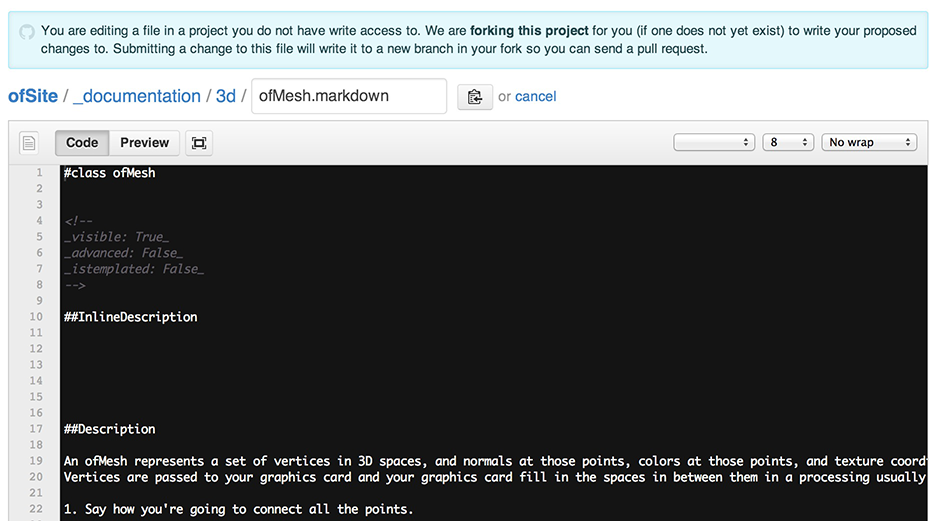
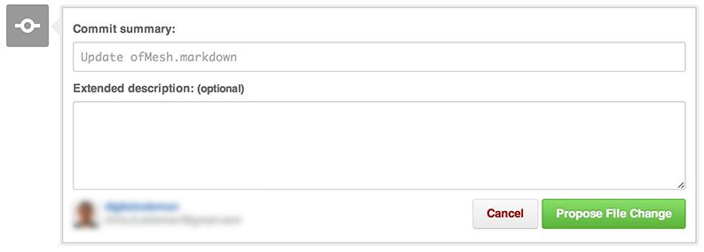
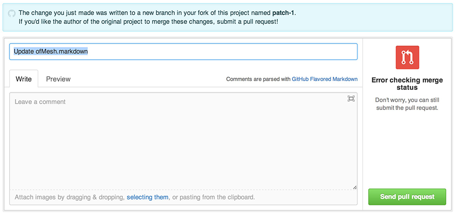
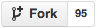
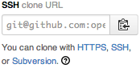
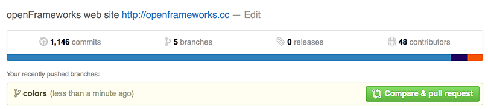

도큐먼트작성에 공헌하기
오픈프레임웍스 도큐먼트는 커뮤니티의 노력에 의해 만들어졌으며, 많은 사람들이 참여하여 부족한 오타를 수정하거나, 예제를 추가하여 토큐먼트를 완성해 나가기를 고대하고 있습니다. 이런 도움을 주는데 관심이 있으시더나 뭔가에 대해서 힘들하신다면, 토큐먼트를 수정하는데 공한할 수 있는 두가지 방법이 있습니다. 하나는 쉬운 방법이고, 다른것은 좀 어려운 방법입니다. 우선, 토큐먼트의 구조와 포맷에 대해 잠깐 살펴봅시다.
토큐먼트의 구조와 포맷팅
오픈프레임웍스 사이트의 토큐먼트는 .markdown파일들로 작성되어 openFrameworks ofSite Github에 저장되어있습니다. 각 클래스의 도큐먼트는 해당 클래스이름으로 된 .markdown파일로 작성되어 있으며, 안에는 해당 클래스의 모든 메소드와 변수들이 담겨있죠. 도큐먼트 웹사이트의 폴더구조는 오픈프레임웍스 클래스 구조와 동일하게 되어있습니다.
예를들어, ofMesh 도큐먼트를 살펴보면 아래와 같습니다:
_documentation/3d/ofMesh.markdown
헤매지 않도록, 플래스의 함수들은 자신만의 파일에 작성되어있습니다.
_documentation/3d/ofMesh_functions.markdown
도큐먼트 문서는 약간 수정된 마크다운(markdown) 문법으로 작성되어있으며, 아래의 구조를 따릅니다:
# class ofClass
## Description
<description of the class goes here>
## Methods
methods of the class
_description: _
<Description & documentation goes here>
## Variables
variables of the class
_description: _
<Description & documentation goes here>
편집을 할때에는, ##Description이나 _description: _의 뒷부분에 작성해야합니다: 다른 모든 라인들은 자동으로 생성되며, 사이트 내의 빌드 스크립트로 생성될 때 사용됩니다.
링크를 걸때는 일반적인 마크다운 문법을 사용합니다:
[링크제목](http://google.com "대체 텍스트")
이미지도 일반적인 마크다운 문법을 사용합니다:

일반적인 표준 마크다운 문법과 가장 큰 차이를 보이는 곳은 코드 블럭 작성입니다. 표준 들여쓰기 방법 대신, 코드블럭은 내게의 틸드(~)와 괄호로 묶인 ".cpp"로 시작됩니다. 블럭이 끝날때 역시 네개의 틸드를 사용합니다.
예를 들면 다음과 같습니다:
~~~~{.cpp}
// Get the area of that rectangle
float areaValue = myRect.getArea();
// areaValue will be 20000.0.
~~~~
틸드 사이의 모든것은 C++코드로 구문 하이라이트 되어 보여집니다.
하지 말아야 할 것들:
### 이것은 헤더입니다문법을 사용하여 설명에 헤더를 추가하지 마십시오 : 헤더는 개별적인 함수들을 구별하는데 사용되므로, 사이트를 빌드할 때에 사이트를 망가뜨리게 됩니다.
도큐먼트에 새로운 함수를 작성하지 마십시오: 오픈프레임웍스의 새 버젼이 릴리즈될 때마다 자동으로 생성됩니다.
field: value 로 작성된 필드를 수정하지 마십시오: 이부분은 사이트를 빌드할때 사용되는 플래그입니다.
오픈프레임웍스 도큐먼트를 수정하는, 쉬운방법 :
오픈프레임웍스 프로젝트와 마찬가지로, 오픈프레임웍스 웹사이트역시 Github에 저장되어있습니다. Github는 웹사이트로, 깃시스템을 사용하는 거대한 분산 버전관리 온라인 코드 저장소입니다. Github는 오픈소스친화적이며, 이곳에 점점 많은 오픈소스 소프트웨어들이 저장, 수정, 업데이트되고 있습니다.
누구든지 Github를 통해 pull requests를 하여 웹사이트를 업데이트 할 수 있습니다. 여러분이 뭔갈 바꾸고 싶으나 깃의 동작법에 대해서 잘 모른다 하더라도, Github은 웹 페이지에서 아주 쉽게 텍스트파일을 수정할 수 있는 방법을 제공하고 있습니다. Github계정을 만들기만 하면 말이죠. 이 계정이 있으면 무료로 오픈소스 프로젝트를 운영하거나, 사람들과 함께 오픈소스프로젝트를 진행 할 수 있습니다.
github.com에 가입하여 계정을 얻으세요!
Github에 있는 오픈프레임웍스 OF 도큐먼트 수정하기
단계 1 : 클래스 찾기
오픈프레임웍스 도큐먼트 페이지에서, 클래스의 매 페이지 상단에 보면, 두 개의 버튼이 있을겁니다. "Edit Clas" 그리고/혹은 "Edit Functions"입니다:
두 버튼중 하나를 클릭하면, github의 문서 전체의 내용이 담긴 텍스트 편집창으로 이동할것입니다. 이 텍스트들은 클래스 혹은 함수들의 세트입니다. 아마도 이렇게 보일것입니다:

단계 2: 문서 편집하기
텍스트의 블록에서, 편집하고 싶은 메소드, 편수, 함수를 찾습니다. 텍스트를 바로 편집하세요. 편집이 완료되었다면, 텍스트박스 하단에서 편집을 완료할 수 있습니다.

여러분이 변형한 내용들에 대해서 간단한 설명이나 요약을 덧붙일 수 있습니다. "Propose File Change"버튼을 클릭하시면 됩니다.
단계 3: 변경 리뷰하기
과정이 완료되고 나면, 변경된 내용을 리뷰할 수 있습니다:

아레에 보시면 변경된 텍스트들의 모든 내용이 있습니다. 변경한 내용들을 쭉 훑어보면서 실수로 삭제했거나 잘못 작성한 곳이 있는지 확인해보세요. 여러분의 코드를 리뷰한 사람에게 메시지를 보내고 싶다면 그것도 가능합니다.
변경된 내용이 맘에 든다면, "Send Pull Request"버튼을 클릭하세요. 리뷰된 내용은 pull request 되어 submit될 것입니다. pull request 리스트에 등록되고, 추후 관리자에 의해 승인되어, 사이트에 반영될것입니다.이 과정들은 보통 순식간에 벌어지지만, 지원자 팀이므로 가끔은 며칠이 소요될 수 있습니다. 기다리시면 변경된 내용이 사이트에 merge되었다는 이메일을 Github에서 받으실 수 있습니다.
축하드립니다! 오픈프레임웍스 토큐먼트 페이지를 수정했군요. 커뮤니티에 공헌도 했고, 미래의 사람들의 인생을 더 낫게 했습니다. 아주 쉽죠?
오픈프레임웍스 토큐먼트를 수정하는, 어려운 방법:
Github의 도큐먼트를 직접 수정하는것이 훌륭하지만, 나름의 한계가 있습니다. 이미지를 토큐먼트에 추가할 수 없고 , 실제 사이트에 반영되었을 때 어떻게 보일지 알수 없죠. 이런것들이 가능할려면, 여러분의 컴퓨터에 로컬상으로 복사본을 받아 구동해야 합니다.
어떻게 하는지 이미 알고 있다면, 맨 하단 섹션 요약 설명으로 넘어가시기 바랍니다.
단계 1: 요구사항 설치
사이트 구동을 위해 설치해야할 필요 요구사항은 운영체제에 따라 다릅니다. 현재는 OS X와 리눅스만 제공됩니다.
OS X 에 요구사항 설치
단계 1.1 : 파이썬 설치
Python은 프로그래밍 언어로 ofSite 웹사이트를 빌드하고 컴파일하는데 사용됩니다. 대부분의 OS X머신들은 파이썬을 가지고 있지만, 여러분의 컴퓨터에 설치가 되어있는지 확인해야합니다. 가장 쉬운 방법은 터미널 윈도우를 띄워 아래와 같이 명령어를 사용하는 것입니다:
python --version
만약 이미 파이썬이 설치되어 있다면, Python 2.7.5라고 보일것입니다. 숫자는 아마도 다를 수 있으나, 2.7보다 크다면 상관없습니다.
축하드립니다! 바로 진행하시면 되겠네요. 단계 1.4로 넘어가세요.
만약 파이썬이 설치되어 있지 않다면, python: command not found라는 결과가 보일것입니다. 다음의 단계들을 따라주시기 바랍니다.
단계 1.2: Homebrew 설치하기
Homebrew는 OSX를 위한 패키지 매니저입니다. 커맨드라인에서 OSX용 어플리케이션을 쉽게 설치할 수 있게 해줍니다. 마찬가지로, brew가 설치되었는지 확인하려면, 터미널에 아래와 같이 입력합니다:
brew -v
만약 Homebrew가 설치되어 있다면, Homebrew 0.9.4라고 보일것입니다. 숫자는 아마도 다를수 있으나, 0.9보타 크다면 상관없습니다. 단계 1.3으로 넘어가세요.
만약 Homebrew가 설치되어있지 않다면, brew: command not found가 보일것입니다. 이럴 경우 homebrew website에서 소개하는대로 스크립트를 사용하여 설치하면 됩니다. 페이지의 하단 부근에 보시면, 설치방법이 있습니다. 스크립트는 아래와 같을 것입니다:
ruby -e "$(curl -fsSL https://raw.github.com/mxcl/homebrew/go)"
스크립트를 복사해서 터미널에 붙여넣고 실행해보십시오. 패스워드를 물어볼 것이며, 많은 텍스트들이 출력될것입니다. 설치되는 과정입니다. 마치작에 아마도 아래에 보이는 명령어를 실행하라고 물어볼것입니다.
brew doctor
그리고 다음으로 컴퓨터에서 정확히 뭘 할것인지 설명을 제공해 줄것입니다.
단계 1.3: 파이선을 실제로 설치하기
터미널에 아래와 같이 입력합니다:
brew install python
파이썬이 설치될 것입니다. 잘 하고 계십니다.
단계 1.4: logofile 설치하기
이제 실제로 blogofile을 설치할 것입니다. blogofile은 블로그 프레임워크로, 오픈프레임웍스 웹사이트는 이것으로 빌드되었습니다. 쉽게 신스톨할려면 easy_install을 사용하는것입니다. 이는 파이썬의 일부로, blogofile을 설치할 때 사용할 수 있습니다.
아래의 두줄을 차례로 복사하여 터미널에 붙여넣으십시오:
sudo easy_install lxml
sudo easy_install blogofile
최근 sudo를 사용했느냐 따라서 패스워드를 물어볼 수도 있습니다.
Step 1.5: Install Git
단계 1.5 : 깃 설치하기
깃은 분산 버전관리 시스템으로, 오픈프레임웍스 뿐만 아니라 오픈소스의 대부분이 사용하는 것입니다. 코드작업을 할때에 핵심이자, 배워둘만한 가치가 있는 심오한 분야입니다.
현재 대부분의 OS X 컴퓨터는 이미 깃을 가지고 있을것입니다: 혹시 모르니 터미널에 아래의 명령어를 입력하여 확인해봅시다:
git --version
깃이 설치되어 있다면, git version 1.7.12.4(Apple Git-37)이라고 보일것입니다. 단계 2로 넘어가세요!
만약 깃이 설치되어 있지 않다면, git: command not found라 보일것입니다. Git website로 가서 깃을 설치해야 합니다.
리눅스에서 요구 사항 설치
단계 1.1: blogofile 설치
Blogofile은 오픈프레임웍스를 생성하는 도구입니다. 리눅스에서 설치하기 위해서는, pip라고 불리우는 파이썬 도구를 사용해야합니다. 아마도 대부분 이미 시스템에 설치되어있을것입니다만, 만약 설치되어있지 않다면, 아래의 명령어로 설치할 수 있습니다:
sudo apt-get install python-pip
사이트는 또한 lxml이라 불리우는, xml을 파싱하는 파이썬 모듈을 필요로 합니다. 아래 명령어로 설치할 수 있습니다:
sudo apt-get install python-lxml
이제 blogofile을 설치할 수 있습니다:
sudo pip install blogofile
단계 1.2: 깃 설치하기
깃이 설치되어있지 않다면, 아래 명령어로 깃을 설치할 수 있습니다:
sudo apt-get install git
단계 2: 여러분만의 ofSite의 복사본 얻어오기
오픈프레임웍스와 마찬가지로, ofSite 저장소또한 Github에 호스팅되어있습니다. Github은 깃으로 만들어진 거대한 온라인 코드 저장소로, 오픈소스친화적이며, 이곳에 점점 많은 오픈소스 소프트웨어들이 저장, 수정, 업데이트되고 있습니다
Github계정이 필요합니다. 만약 계정이 없다면, 무료로 만드실 수 있습니다. Github로 가셔서 가입하십시오.
계정을 만들었다면, ofSite저장소의 master브랜치를 fork할 수 있습니다. fork를 하면, 존재하고 있는 코드묶음을 가져다가 개인적인 복사본으로 만들지만, 뒷단에서는 여전히 원본 코드들과 연결되어있습니다. (역자 주: 분기를 만든다는 뜻입니다. 원본코드와 별도로 복사본을 가지고, 독립적이지만, 백단에서는 연결되어있습니다.)
https://github.com/openframeworks/ofSite에 접속해, 좌측 상단에 보시면, fork버튼을 볼 수 있을것입니다. 아마 이렇게 생겼을 것입니다:

클릭하면, 여러분만의 저장소가 생성될것입니다. 다른점이 있다면 주소가 https://github.com/
저 주소가 바로 개인적인 놀이터입니다. 여기서 코드를 변경할 수 있고, 테스트 할수 있으며, 만족스러운 결과를 얻었을때, 그것을 원래 메인 ofSite저장소로 요청하여 관리자에 의해 승인되면, 오픈프레임웍스의 사이트에 반영이 됩니다.
단계 3: 로컬머신에 사이트를 복제하기
ofSite 저장소의 좌측에, Clone URL이라는 텍스트 박스가 보일겁니다. 이렇게 생겼습니다:

작은 clipboard버튼을 클릭하면, 클립보드에 여러분의 URL이 복사될것입니다. 아니면 그냥 드래그하여 복사할 수도 있습니다.
터미널을 열어, 코드를 저장할 원하는 디렉토리로 이동한 다음, 아래와 같이 입력하세요 :
git clone <<paste the url here>>.
예를 들어, 제 저장소의 복사본의 경우 아래와 같습니다:
# EXAMPLE:
git clone git@github.com:workergnome/ofSite.git
위 명령어가 실행되면, 디렉토리에 저장소의 복사본이 다운됩니다. 거의 다 되었습니다!
단계 4: 빌드하여 사이트를 구동하기
마지막 단계는 실제로 컴파일하고 사이트를 구동하는 것입니다. 저장소의 디렉토리로 가서 아래의 빌드 명령어를 실행하세요:
cd ofSite
blogofile build
사이트를 빌드하는데는 몇분정도 소요될 것입니다. 다 되면, 아래와 같이 입력하여 로컬상에서 서버를 시작합니다:
blogofile serve
로컬에서 구동되고 있는 서버를 확인할때에는 웹브라우저에서 http://localhost:8080로 접속합니다.
확인을 마쳤다면, 터미널에서 <control-c>를 입력하여 서버구동을 종료할 수 있습니다.
단계 5: 변경해봅시다!
축하합니다! 이제 로컬머신상에서 서버를 구동할 수 있게 되었습니다.
현 상황에서 Github로 할수있는 최고의 연습은 저장소에서 master 가지(branch)가 아닌 feature 브랜치(branch)를 만들어 변경하는것입니다.
로컬상에 저장소에 새로운 브랜치를 생성하는데, 브랜치의 이름으로 간략하게 어떤 작업을 할것인지 feature_name을 줄 수 있습니다.
두번째 터미널 윈도우에서, 저장소의 디렉토리로 이동하여 아래와 같이 입력합니다:
git branch <feature_name>
git checkout <feature_name>
예를들어, 만약 컬러와 관련된 문서를 업데이트 하고 싶다면, 아래와 같이 입력할 수 있을것입니다:
# EXAMPLE
git branch colors
git checkout colors
이 브랜치 이름은 앞으로 다시 사용할 필요가 있다는 것을 명심하십시오. 만약 이름이 무엇인지 잊어버렸다면, 아래의 명령어로 브랜치의 리스트를 확인할 수 있습니다:
git branch
맨 처음 이 작업을 수행할때, github계정의 이름과 패스워드를 입력해야 합니다.
이렇게 하면 모든 브랜치의 리스트를 볼 수 있으며, 그중 현재 작업중인 브랜치에는 *가 붙어있습니다.
_documentation 디렉토리안의 파일을 수정하여 사이트를 업데이트 할 수 있습니다. 이후 blogofile을 구동하고 있는 터미널 윈도우에서, <control-c>를 입력해 웹서버 구동을 종료하고, 아래와 같이 입력하여 사이트의 재구축을 완료하십시오.:
blogofile build
blogofile serve
이후 웹브라우저를 새로고침하여 변경된 사항을 확인할 수 있습니다
도큐먼트의 문법과 포맷은 위의 도큐먼트 구조와 포맷팅 섹션을 읽어주시기 바랍니다.
단계 6: 변경된 사항을 Github 저장소로 푸쉬하기
자 이제 도큐먼트를 업데이트 하였으니, 해당 파일을 깃 저장소에 추가(add)하고, 커밋(commit)해야 합니다.
우선, 업데이트한 파일을 깃에 추가(add)해야 합니다.(역자 주: file_name은 변경한(저장소에서 추가할)파일명입니다. .으로 비어있어서 수정했습니다.)
git add file_name
그리고 나서, 파일을 커밋(commit)합니다. 커밋할때 '커밋 메시지(commit message)'라 불리우는, 수정한 사항에 관한 설명을 함께 작성해야 합니다. 이 커밋 메시지는 필요할 경우 가능한 자세하게, 여러줄로도 작성할 수 있습니다. 일반적으로로 한 문장으로 작성하지만, 여러줄로 작성할 경우 첫 문장은 설명의 제목이, 추가 문장들은 문단이 됩니다.
git commit -m "<A note describing what things you've changed>"
그 다음, 서버에 해당파일을 푸쉬하니다. 단계 5에서 생성했던 브랜치 이름(feature_name)을 기억해야 합니다.
git push origin <feature_name>
예를들면 아래와 같습니다.
#EXAMPLE
git add .
git commit -m "Updated the docs on RGBA to HLSA conversions"
git push origin colors
fork, 푸쉬, 그리고 깃에 관한 더 자새한 사항은, Github에서 제공하는 Fork a Repo문서를 참고해주세요.
단계 7: Pull Request 제출하기
ofSite 저장소의 개인 복사본인 Github페이지로 접속해보면, 아래와 같은 배너를 볼 수 있습니다:

"Compare & pull request" 버튼을 누르면, 원본 ofSite의 관리자에게 여러분이 작성한 변경사항을 담은 메시지를 작성하면서, pull request를 요청할 수 있는 페이지가 뜹니다. pull request가 완료되면, 원본 ofSite관리자에 의해 승인되어 원본 ofSite 저장소에 병합(merge)됩니다.
pull request에 관한 더 자세한 사항은, Github에서 제공하는 Using Pull Requests문서를 참고해주세요.
현재 상황에서, 아래 명령어로 master 브랜치로 돌아갈 수 있습니다
git checkout master
이후 다른 작업을 계속할 수 있습니다. 기억하세요:
- 저장소에 브랜치를 생성한다
- 코드를 수정한다
- 저장소에 추가한다 (add)
- 저장소에 커밋한다 (commit)
- github에 푸시한다 (push)
- github에서 pull request한다.
관리자가 여러분의 변경사항을 리뷰하면서, 해당 pull request에 대해 수정을 요청할 때에는, 단계 6과 단계 7을 통해 언제든지 해당 브랜치로 돌아가 수정하고, 새로운 변경을 푸시할 수 있습니다. 해당 브랜치에서 변경을 푸시하면, 변경된 사항은 pull request에 자동으로 추가될 것입니다.
축하드립니다! 오픈소스 프로젝트를 구축, 수정, 테스트, 제출하였습니다!
OSX 를 위한 요약 설명:
- 파이썬 설치
easy_install lxmleasy_install blogofile- https://github.com/openframeworks/ofSite를 fork 및 복제
- 저장소 디렉토리에서:
blogofile build && blogofile serve - 브라우저에서 http:\localhost:8080로 접속하여 확인
- 작업 브랜치 생성
- 코드 수정
- 저장소 디렉토리에서 :
blogofile build && blogofile serve를 입력하여 변경사항 확인 - 브랜치를 푸시
- pull request 제출
리눅스를 위한 요약설명:
sudo apt-get install python-pipsudo apt-get install python-lxmlsudo pip install blogofile- https://github.com/openframeworks/ofSite를 fork 및 복제
- 저장소 디렉토리에서:
blogofile build && blogofile serve - 브라우저에서 http:\localhost:8080로 접속하여 확인
- 작업 브랜치 생성
- 코드 수정
- 저장소 디렉토리에서:
blogofile build && blogofile serve를 입력하여 변경사항 확인 - 브랜치를 푸시
- pull request 제출
본 튜토리얼은 Bernardo Schorr와 Chris Coleman의 도움을 받아 David Newbury의해 작성되었습니다.
본 튜토리얼의 초기버전은 Frank-Ratchye STUDIO for Creative Inquiry에서 2013년 10월 11-13일에 열린 오픈프레임웍스/라즈베리파이 워크샵에서 작성되었습니다.